Preventative Risk Management (PRM)
Get your head right before you go live: train yourself into the behaviors of a trader and out of the behaviors of a human.
Human psychology is wired to take profits too early and hold losers too long — the exact opposite of what a trader must do. PRM is the set of stops, targets and risk-reward rules you put in place BEFORE a position goes live so the market can never make you human.
The gist
- Risk management splits into two: Preventative RM (everything set up BEFORE a live position) and Reactive RM (once live — endless permutations, no rule book, can only be taught live).
- Scope: ~20% annualized PORTFOLIO volatility means most single-stock positions carry upwards of 30% annualized volatility; correlation makes the portfolio's vol lower than any single name's.
- The marble game (prospect theory): Box A = 4 marbles (3 blue → $1,000, 1 red → $0), EV $750; Box B = a guaranteed $700. When getting PAID ~70-80% wrongly take the certain Box B (take profits too early); when PAYING OUT ~80-90% wrongly take the risky Box A (hold losers). Correct: seek risk when winning (Box A, run winners), take the certain loss when losing (Box B, cut losers).
- Royal Caribbean going into COVID: entry $116 → $111.55 → $78.19 → $32.33 → $28.19, and a year later $83.90 — never revisiting $116. Running down or adding down would be a sackable offense at Goldman Sachs.
- Hard stop = guarantees your downside (Box B, capital preservation); soft target = doesn't cap your upside (Box A). Roll the stop up as a winner runs: buy $100, stop $92 (−$8), target $125 (+$25); at $125 roll the stop to $117 to lock +$17; double up → avg $112.50, stopped at $117 still nets +$4.50.
- R-score = (Target − Entry) / (Entry − Stop) = ($125 − $100) / ($100 − $92) = 3.125 — the ratio of dollars made on winners to dollars lost on losers, and the 1-to-3 risk-reward target we seek on all structures.
- The 1-to-3 ratio gives a low break-even: 1 win + 3 losses = 0 over four trades, so 25% win / 75% loss breaks even (formula 1/(1+R)). On a $100k / 200-trade account, $264,595 from winners ÷ $83,548 from losers = an R-score of 3.17; the losers are necessary inventory.
- Set stops from DoR + ATRP using weekly data for the stop and quarterly data for the target. TREX long (entry $75.34, 8% stop $69.31 / 24% target $93.42, 3:1) hit target mid-Jan 2021 — it worked. STZ short (entry $204.21, 8% stop $220.54 / 24% target $155.20, 3:1) was stopped out 6-Jan-2021 — it didn't work, but the stop behaved exactly as appraised.
- Per-leg hard stops whipsaw a long-short book (get stopped out of all shorts, run naked long, then stopped out of all longs). Solution: spread stops on the (long − short) value — add to the winning leg, reduce the losing leg. The TREX–STZ cross-sector spread (long ~$8bn mid-cap TREX vs short ~$42bn large-cap STZ) ended +7.67% doing nothing. Brokers don't support spread stops → keep mental stops in a spreadsheet.
TA/PA is timing only — now get your head right
- The chart is a photograph of the fundamentals behind price; TA and PA add value to executions for entry and exit — timing only — and never generate trade ideas.
- This video lays the groundwork to get your head right BEFORE trading live; getting it wrong is costly in real money losses in a very short space of time (and misses very big gains).
- Assumption throughout: you already have an actionable trade idea (fundamental tailwind + catalyst + timing + structure) and express it as long/short stock (US: 50% margin / 2x leverage) or a CFD (rest of world). Options structuring is the POTM series, not here.
Anton frames PRM as the psychological and mechanical setup you complete once an idea is actionable and it's time to actually hold a position. It is deliberately not a rigid rulebook.
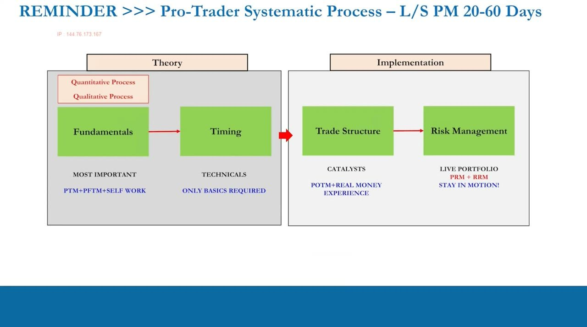
Two kinds of risk management
- Preventative RM (PRM): everything put in place BEFORE you have a live position (long or short) or a live portfolio.
- Reactive RM (RRM): once you actually hold live positions — an endless amount of possible actions, no rule book, only multiple best practices. It cannot be taught in a video; it needs a pro trader sitting on your shoulder (ITPM mentoring).
- Never forget the mandate: a trade idea is not an investment and not a day trade — we are 20-to-60-day long-short portfolio managers.
The PTM series can teach PRM in full; RRM can only be learned live with real positions and coaching.
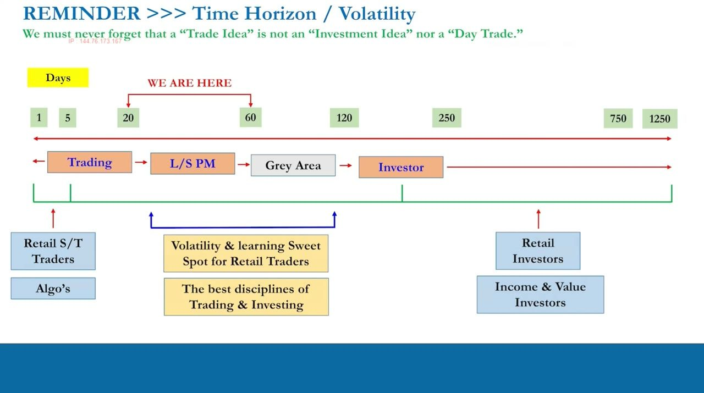
Why PRM exists: the scope of the volatility
- We're preventing unnecessary losses; the parameters are necessary because of the failings of human psychology around money.
- Sitting in the 20-60 day horizon and choosing ~20% annualized PORTFOLIO volatility means most single-stock positions likely carry upwards of 30% annualized volatility, some much higher.
- Even striving for low correlation, some correlation remains — so the portfolio's overall volatility is lower than any single stock's within it. Positions will go right and go wrong all the time; expect it before you go live.
The 15-30% band is a portfolio-level annual figure; individual names are chosen hot and run far more volatile.
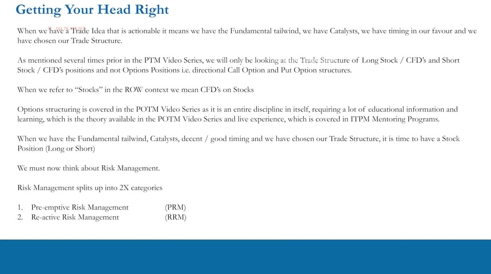
The marble game: risk vs certainty
- One-shot game, two boxes. Box A: 4 marbles — 3 blue → pay $1,000, 1 red → pay $0. Box B: 1 green marble → $700 guaranteed.
- Scenario 1 (you're getting PAID): pick a box to receive. Scenario 2 (you're PAYING OUT): pick a box to pay. The boxes never change.
- Box A = risk; Box B = certainty. You know the marble makeup of each box before you choose.
This is prospect theory made concrete — the same gamble framed as a gain then as a loss, to expose how differently humans treat each.
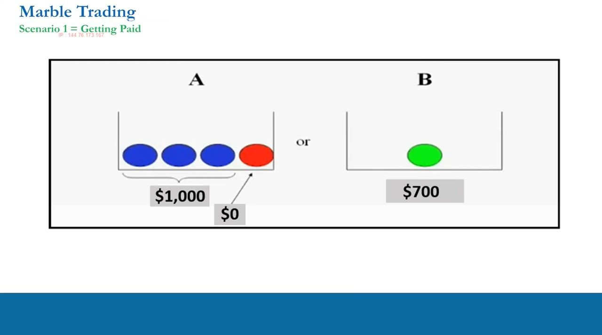
How humans (wrongly) respond
- Getting paid: crowds skew ~70/30, sometimes 80/20, to certain Box B. Facing a gain, humans crave certainty — in trading this is taking profits too quickly because it feels comfortable.
- Paying out: crowds skew ~80/20, usually 90/10, to risky Box A. Facing a loss, humans become risk-seeking — in trading this is holding losers too long, hoping to get out for nothing.
- Many respondents even pick the same box in both scenarios — their psychology is screwed up because nothing about the boxes changed.
These are natural, human, and nothing to be ashamed of — but in trading they are exactly the wrong instincts.
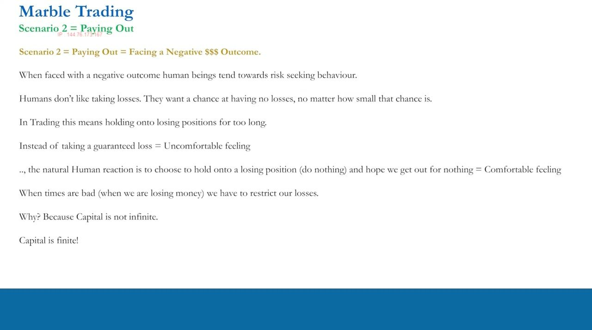
The correct trader answers + the true EV
- Getting paid → correct answer is Box A: seek risk, let profits run, even add capital to a winner. Paying out → correct answer is Box B: take the certain loss, preserve finite capital.
- Whether you play once or an infinite number of times, Box A's probability-adjusted payout is $750 versus Box B's certain $700 — Box A is higher. The numbers are close on purpose to confuse; magnify them and it's obvious.
- Portfolio translation: a human adds to losers (improving average price) and trims winners — over infinite trades you end up holding only losers and you blow up. A trader cuts losers (Box B) and runs/adds to winners (Box A).
The lesson is a single sentence: train yourself into the behaviors of a trader and out of the behaviors of a human. It takes real money and practice.
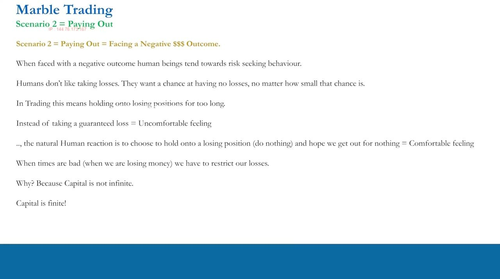
The Goldman interview: Royal Caribbean
- A graduate is 'hired' and long a stock in 2019: in at $116, up to $120.02 five days later (29 Nov 2019), then $133.49 into early 2020 — run, add, or trade out?
- Then the slide: $116.45, $111.55 (7 Feb), $106.11 (21 Feb), $78.19 (3 Mar), $32.33 (13 Mar), $28.19 (23 Mar) — at each step: run, add, or cut?
- A year later the stock is $83.90 with a yearly high near $98-99 — never revisiting $116. Running it all the way down (or adding down) leaves you underwater a year later having ridden a huge drawdown.
The stock was Royal Caribbean into COVID, but the name doesn't matter — it applies to all stocks and all time. At Goldman, running or adding down would be a sackable offense; in an interview it would cost you the job.
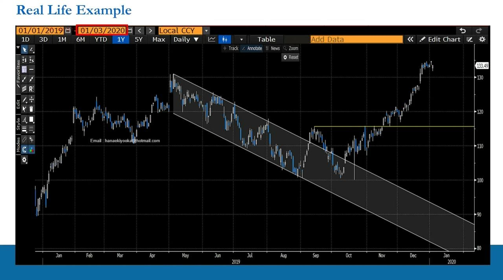
Hard stops (Box B) and soft targets (Box A)
- A hard stop loss guarantees downside — if the stock trades to a level against you, you're out for a fixed loss. That is pulling from Box B when you're paying out.
- A soft target does NOT cap upside — when getting paid we don't use a hard target because we don't want to limit gains. That is pulling from Box A when you're being paid by the market.
- Stops and targets are the mechanical embodiment of the marble-game answers: certainty on the loss, open-ended risk on the win.
Not every position has a hard stop at all times — but you must understand the concept fully before choosing when to use one.
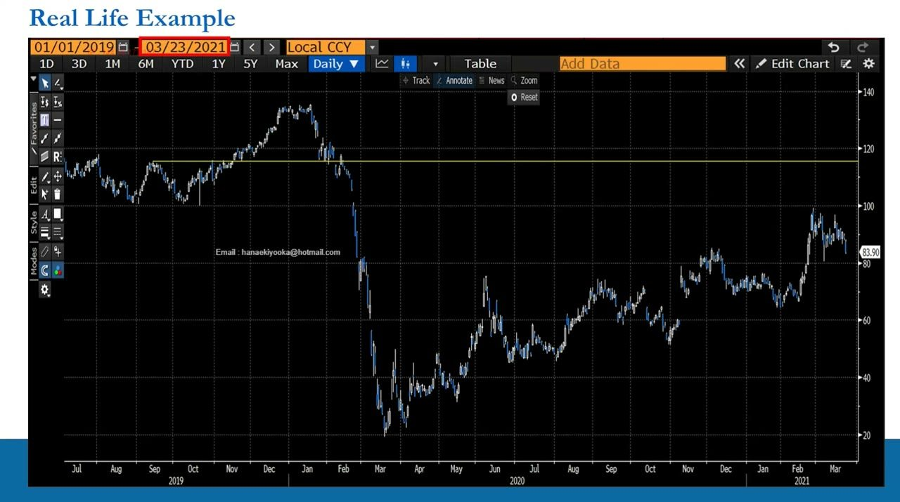
Rolling up the stop + adding to a winner
- Buy at $100, hard stop $92 (−$8), soft target $125 (+$25, roughly 3× the stop). If it reaches $125 and fundamentals still support upside, don't lock in just $25 — roll the stop up to $117 ($8 below price), guaranteeing +$17.
- Add risk by doubling at $125 → new average $112.50; even stopped at the rolled-up $117 you still net +$4.50, and every further tick now pays double.
- This is not a blanket rule — every situation is taken on its own merits and builds with experience.
Rolling the stop and adding to winners is how you seek risk when winning while still protecting locked-in profit.
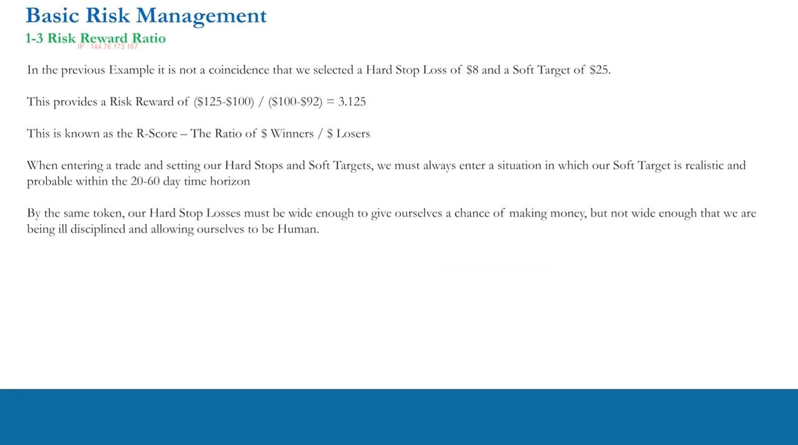
The R-score and the 1-to-3 target
- R-score = (Target − Entry) / (Entry − Stop). For the example: ($125 − $100) / ($100 − $92) = 3.125 — the ratio of dollars made on winners to dollars lost on losers, applicable to one trade or to a whole account.
- We seek a 1-to-3 risk-reward on essentially all structures for three reasons: it filters out weak setups, it makes losers contained 'inventory,' and it lets you profit without a high win rate.
- A sensible stop is wide enough (given the stock's volatility over the horizon) to give a real chance of being right, but not so wide you're being dishonest and reckless.
The 1:3 ratio must be realistic within the bounds of the stock's volatility over the 20-60 day horizon — you don't force it if the vol isn't there.
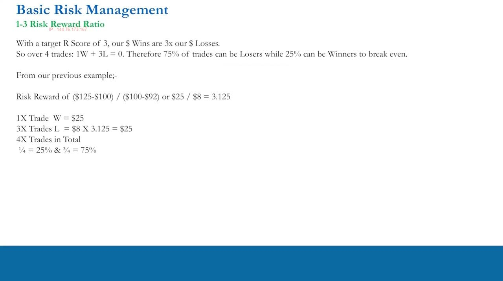
Break-even math and expectancy
- With R = 3, dollar wins are 3× dollar losses, so 1 win + 3 losses = break even over four trades → you can lose 75% of trades (25% win rate) and still break even (formula 1/(1+R)).
- For the 3.125 example: one $25 win offsets three $8 losses — one over four = 25% win rate, three over four = 75% loss rate, exactly the break-even conditions.
- On a $100k account over 200 trades: $264,595 from winners (50 wins, 25%) vs $83,548 lost on 150 losers → R-score 3.17. Above a 25% win rate you make money; the losers are necessary inventory that funds the winners.
No one wins 100% of the time — the 1:3 discipline takes the pressure off needing a high hit rate and treats containable losses as the cost of doing business.
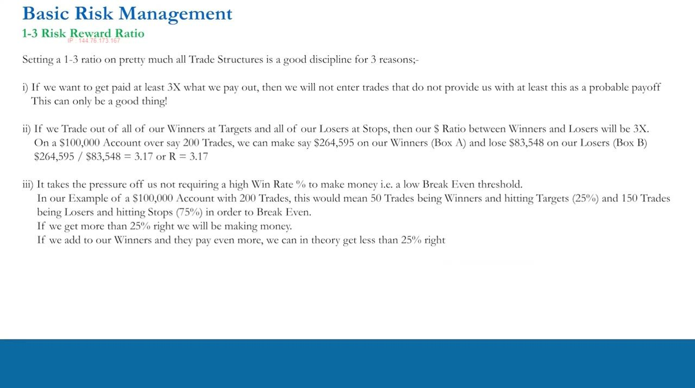
TREX long: a worked volatility appraisal
- Long TREX, Nov 2020, last price $75.34. Monthly DoR over ~259-260 months: mean close-to-close +2.511%, 139 up months vs 120 down; high-to-low mean range 26.24% — a volatile stock.
- A 12% stop / 36% target proved too wide (36% needs three straight ~12% up months; cumulative 9.65% + 8.88% + 3.47% + 2.32% = 24.32%). Tighten to an 8% stop / 24% target: ~20% chance of being stopped in month one, and a 73% chance of a >15% high-to-low monthly range if right.
- Prices: entry $75.34, stop $69.31 (−$6.03), target $93.42 (+$18.01) — a clean 3:1. Overlap this volatility target with your valuation/catalyst work to confirm it's fundamentally realistic.
Fast-forward to Feb 2021: target hit mid-January, within a couple of months — the appraisal was right and the trade worked.
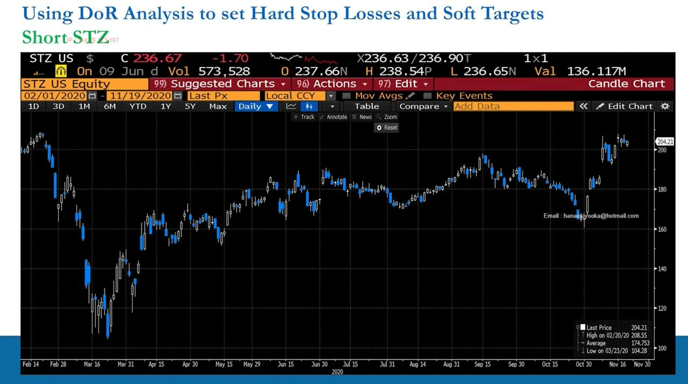
STZ short: when the past data conflicts
- Short STZ (Constellation Brands), Nov 2020, last price $204.21. Close-to-close mean is +1.778% over 344 months (202 up / 139 down) — the data conflicts with a short because it's an ex-growth stock whose history was mostly up.
- 20.65% of months rose >8% (so an 8% stop gives ~80% chance of surviving month one); high-to-low >9% happened 75.65% of the time, so if the direction is right the volatility exists. Prices: entry $204.21, stop $220.54 (+$16.33), target $155.20 (−$49.01) — 3:1.
- You need an abnormal move down — a genuine fundamental break — which is exactly why you catch ex-growth shorts in phase two/three. In an expansionary economy conflicting historical data is normal and high-quality shorts are hard to find.
Fast-forward: stopped out on 6 Jan 2021 for −$16.33 — it didn't work, but the stop behaved exactly as appraised (survived month one, not too wide, not reckless).
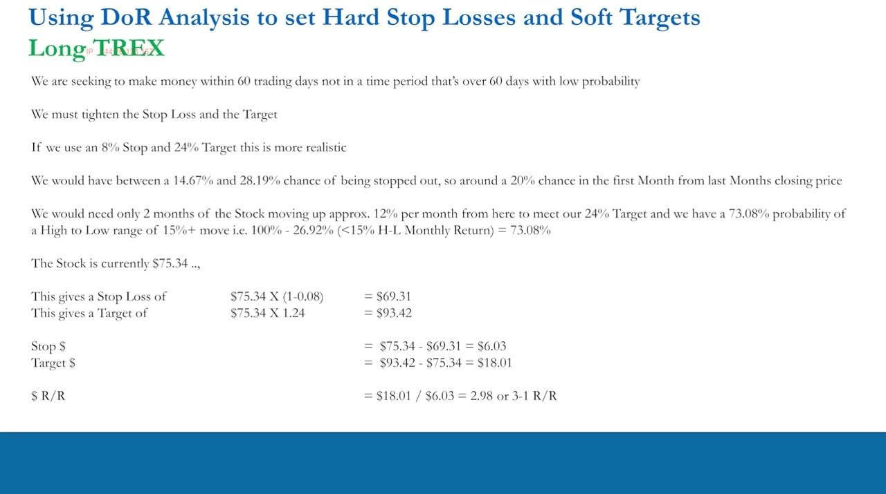
Why hard stops break a long-short book
- Put hard stops on every long and short in a net-long book during an expansion and you keep getting stopped out of shorts every two-to-three months, drifting long-only — against the mandate.
- Correlation is always present, so the whole book can whipsaw: market up 10% stops out all shorts (now naked long), market back down 10% stops out all longs — you lose on everything and blow up.
- It's our job to make money when markets go up AND down — so you cannot simply hard-stop every leg independently.
Hard stops counter human behavior but have real limitations in a correlated long-short portfolio.
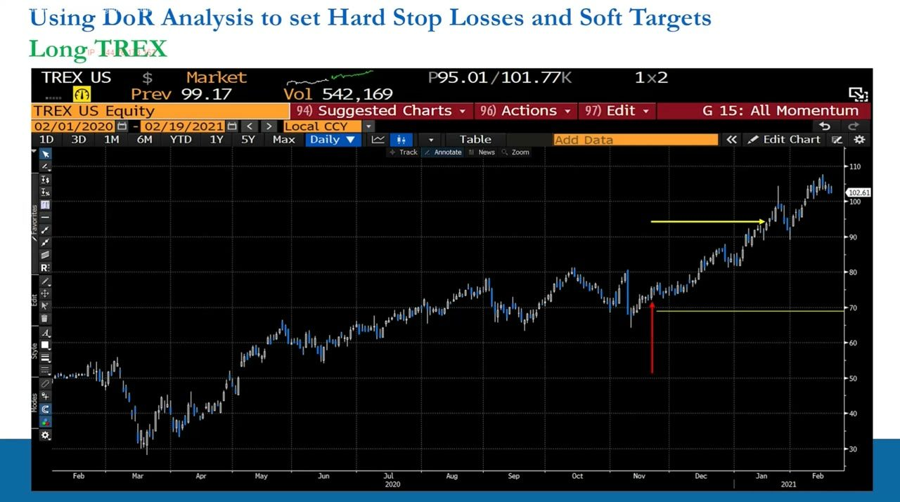
Spread stops: the TREX–STZ cross-sector trade
- Trade the (long − short) value: long TREX (~$8bn mid-cap, wood decking) vs short STZ (~$42bn large-cap, alcoholic beverages) — fits the long-mid/short-large remit. Spread ≈ −$130 on 19 Nov 2020 (TREX $73.58, STZ $204.21 → −$130.63).
- Back of the envelope 10% stop / 30% target on the spread: stop −$143.69, target −$89.56. Add to the winning leg and reduce the losing leg; when a leg hits its own soft target (e.g. TREX $93.42) revert it to a hard stop + new target.
- By Feb 2021 the spread was −$120.61 — a +$10.63 gain, +7.67%, doing nothing. Brokers don't support spread stops, so keep MENTAL stops/targets in a spreadsheet and execute both legs yourself.
Both legs are contingent on each other, so you act on one side and the other side together — that is best practice for trading relative outperformance.
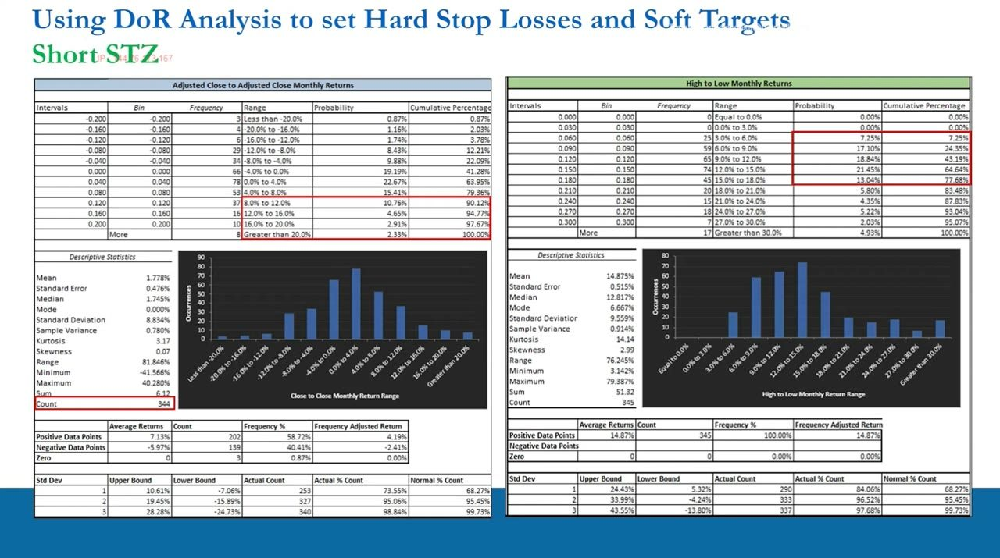
ATRP: the fast twin of DoR, and the takeaway
- ATRP (average true range %) is a quicker route to rough one-to-three-month volatility: use WEEKLY data to set the stop and QUARTERLY data to set the target, for both single stocks and the spread.
- It's not a shortcut — ideally do both ATRP and DoR; ATRP is good enough for part-time retail traders, DoR confirms the data and matters if you want to work in the industry.
- Above all be intellectually honest about the statistics, set realistic targets and sensible stops, and repeat the process over many trades — there is no one-size-fits-all rulebook; everything is situational and we are absolute-return traders who make money both up and down.
Next video: Chris Quill runs the DoR and ATRP spreadsheet class plus gross/net/beta-adjusted exposure limits and long-term R-score and win/loss-rate targets.
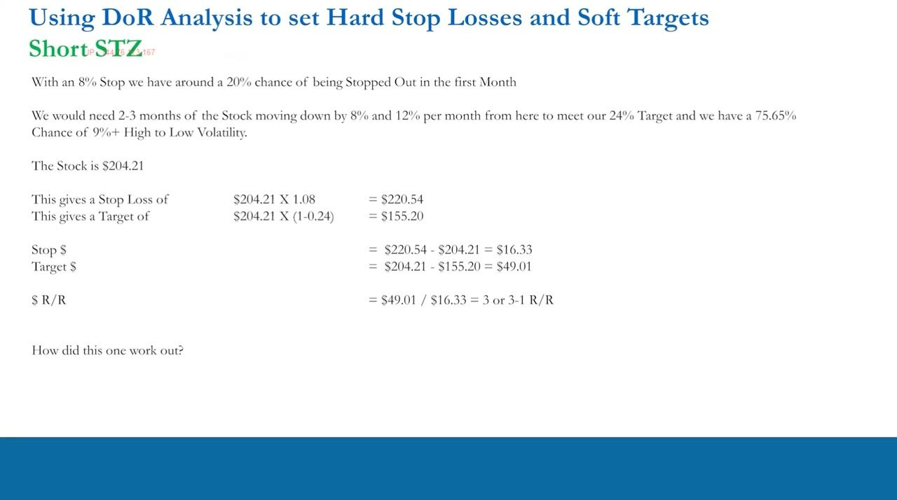
Glossary
- PRM (Preventative Risk Management)All the risk parameters — hard stops, soft targets, risk-reward ratios, spread stops — put in place BEFORE a position or portfolio goes live. Fully teachable in a video.
- RRM (Reactive Risk Management)The actions taken once a position is live. Endless permutations, no rulebook — only best practices — and can only be learned with real money and live coaching.
- Box A / Box B (marble game)Box A is risk (4 marbles: 3 blue → $1,000, 1 red → $0; EV $750); Box B is certainty ($700 guaranteed). Pull Box A when winning (run winners), Box B when losing (cut losers).
- Prospect theoryThe psychological bias the marble game exposes: humans seek certainty when facing gains (take profits early) and seek risk when facing losses (hold losers) — the opposite of correct trading behavior.
- Hard stop lossA stop that guarantees downside — exit for a fixed loss if the stock trades to a set level. Equivalent to pulling from Box B when paying out to the market.
- Soft targetA target that does NOT cap upside — used when getting paid so profits can run; equivalent to pulling from Box A. Rolled up (with the stop) as a winner advances.
- Roll up the stopAs a winner runs, raise the stop to lock in profit — e.g. at $125 move the stop to $117 (−$8) to guarantee +$17, or +$4.50 after doubling to an average of $112.50.
- R-score (risk-reward ratio)(Target − Entry) / (Entry − Stop) — dollars made on winners divided by dollars lost on losers. Example: ($125−$100)/($100−$92) = 3.125. The 1-to-3 target sought on all structures.
- Break-even win rateWith R = 3, one win covers three losses, so 25% wins / 75% losses breaks even (formula 1/(1+R)). Anything above a 25% win rate makes money.
- Necessary inventoryThe contained losses (e.g. $83,548 over 200 trades) that are the accepted cost of enabling the winners ($264,595) — losses are inevitable and treated as a business expense.
- Spread stopA stop/target set on the (long − short) value of a two-stock spread rather than per leg, to avoid being whipsawed. Brokers don't support them, so they are kept as mental stops in a spreadsheet.
- Ex-growth stockA formerly high-growth company that has turned a corner; its mostly-positive history conflicts with a short thesis, so it's caught in phase two/three where abnormal downside moves occur.
- ATRP (Average True Range %)A fast volatility measure — weekly data to set stops, quarterly to set targets — the quicker twin of the Distribution of Returns analysis for the one-to-three-month horizon.